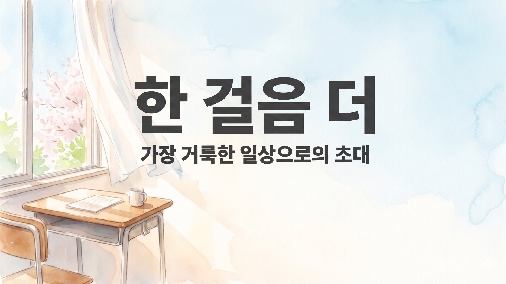
드라마틱 에필로그
레위기 19:1–2, 18
🎵 사운드를 켜고 감상해주세요
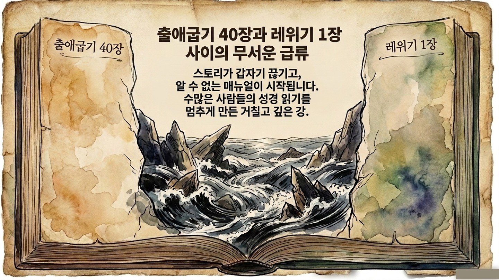
창세기와 출애굽기까지는 흥미진진한 스토리에 푹 빠져 재미있게 읽어 나갑니다.
하지만 출애굽기 40장을 넘어 레위기 1장을 맞이하는 순간, 수많은 사람들이 제사법이라는 거대한 강에 막혀 성경 읽기를 멈추고 맙니다.
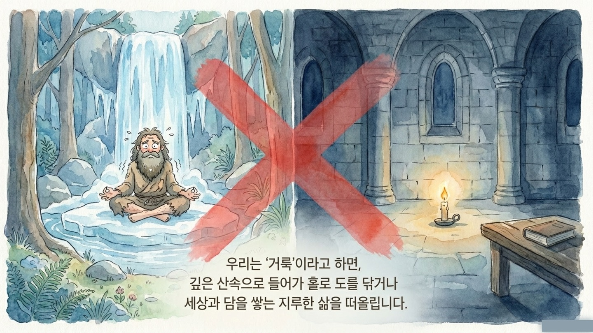
'거룩' 하면 왠지 세상과 담을 쌓고 살아야 할 것만 같은 지루한 의무감과 부담감이 엄습합니다.
TV 프로그램 <나는 자연인이다> 아저씨처럼 깊은 산속 폭포수 아래서 고행을 하거나, 어두운 성당 촛불 앞에서 묵직하고 신성한 목소리를 내야만 할 것 같죠.
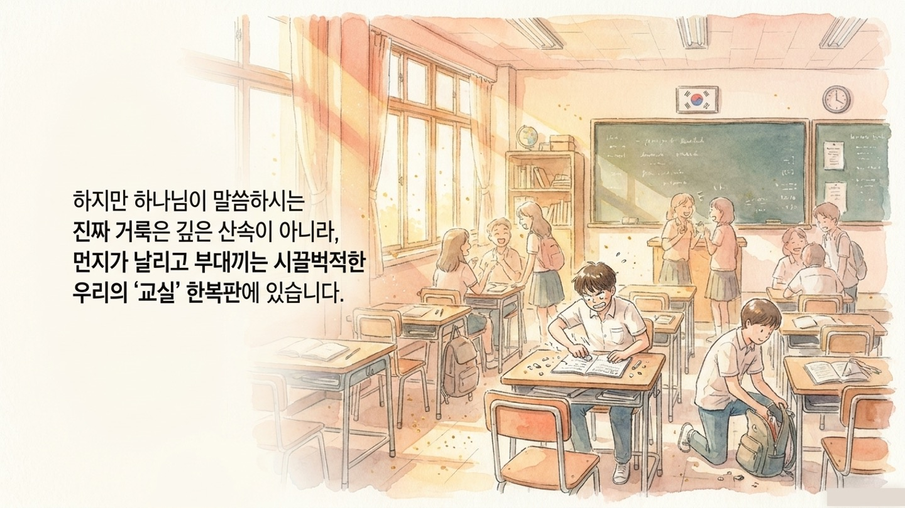
하지만 레위기 19장에서 하나님이 보여주신 거룩의 현장은 조용한 방이 아니었습니다.
그곳은 흙먼지 날리는 농장, 땀 흘려 일하는 팍팍한 일터, 그리고 사람 냄새 가득한 시장 바닥이었습니다.
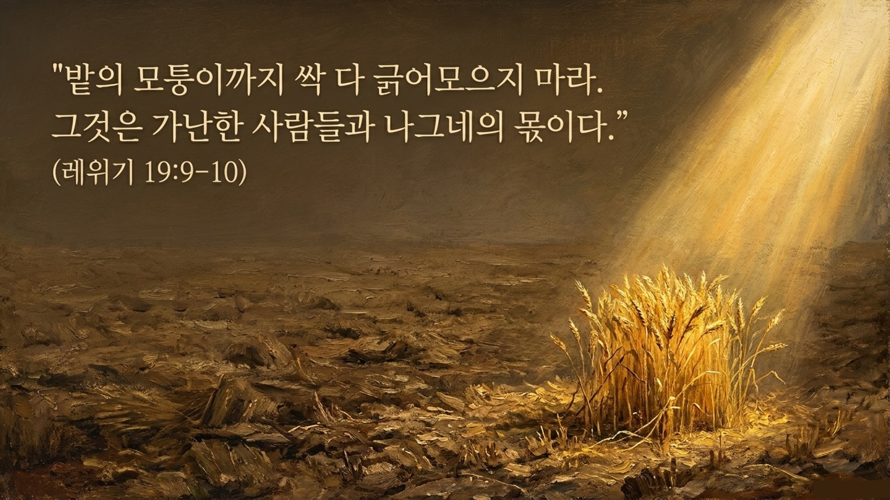
레위기 19장 9절은 곡식을 거둘 때 밭 모퉁이까지 다 긁어모으지 말고, 이삭을 남겨두라고 명령하십니다.
내 피땀과 노력이 들어간 내 소유라 해도, 헐벗은 이웃과 약자들을 위해 기꺼이 아낌없는 여백을 내어두라는 뜻입니다.
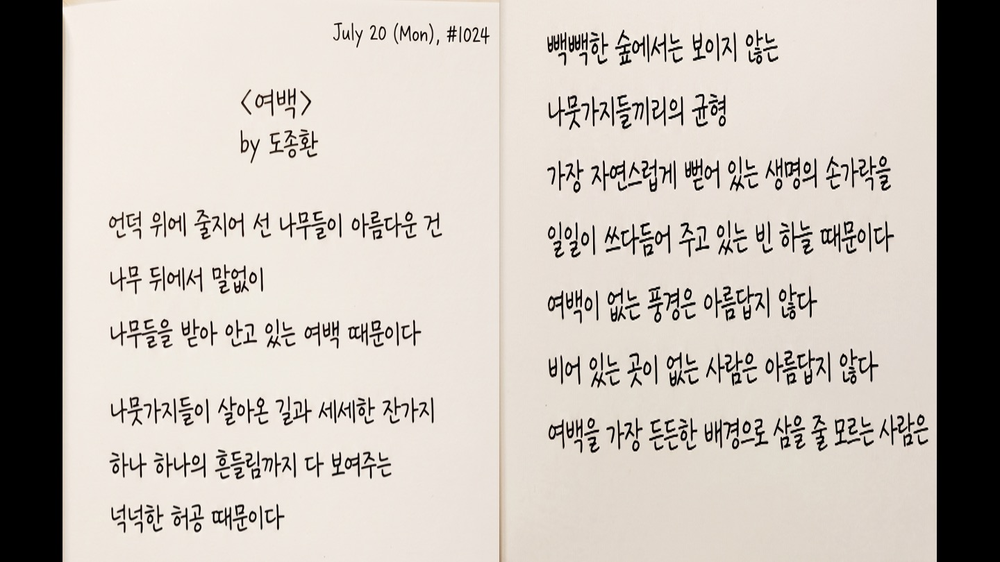
밤새 코피 흘려 만든 나만의 역사 요약 노트를 결석한 친구에게 복사해 주는 것.
친한 무리끼리 모여 식사하는 견고한 원의 한 귀퉁이를 살짝 열어, 외롭게 혼자 밥을 먹는 친구에게 곁을 내어주는 것입니다.
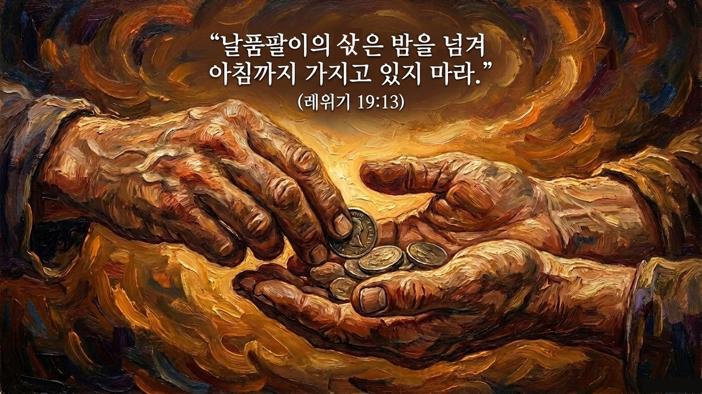
"날품팔이의 임금은 밤을 넘기지 마라." 그 푼돈은 누군가의 당장 먹을 오늘 저녁 밥이자 아기의 분유값입니다.
친구에게 빌린 충전기를 귀찮다고 미루지 않고 돌려주어, 친구가 배터리 0%로 발을 동동 구르지 않게 챙겨주는 마음도 위대한 거룩입니다.
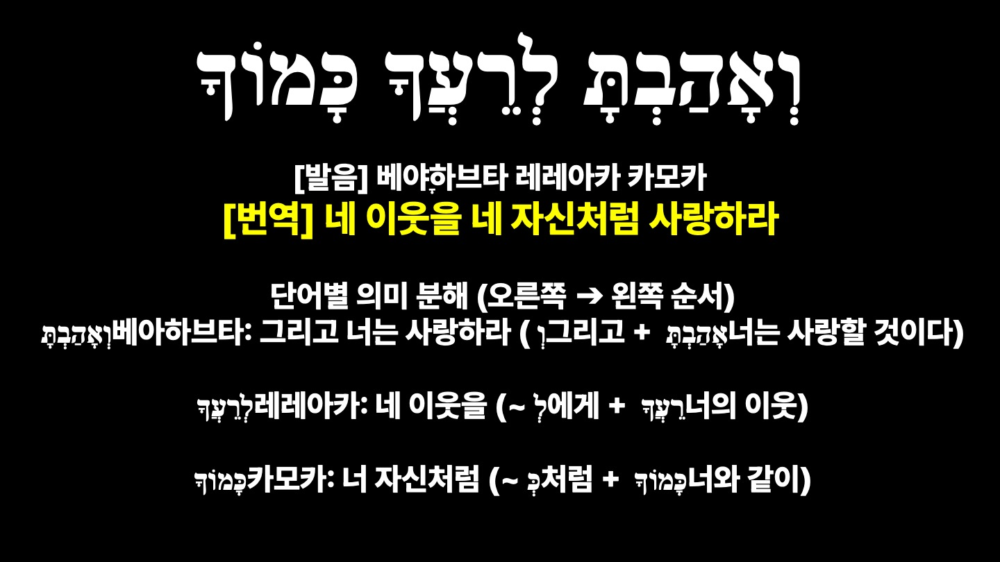
신학대학원 시절, 지우개 가루를 날리며 "네 이웃을 내 자신처럼 사랑하라(레위기 19:18)"를 적고 있었습니다.
그때 편의점에 가며 필요한 게 있냐 물어봐 준 친절한 룸메이트를, 저는 바쁘다는 이유로 귀찮은 듯 쫓아내고 말았습니다.
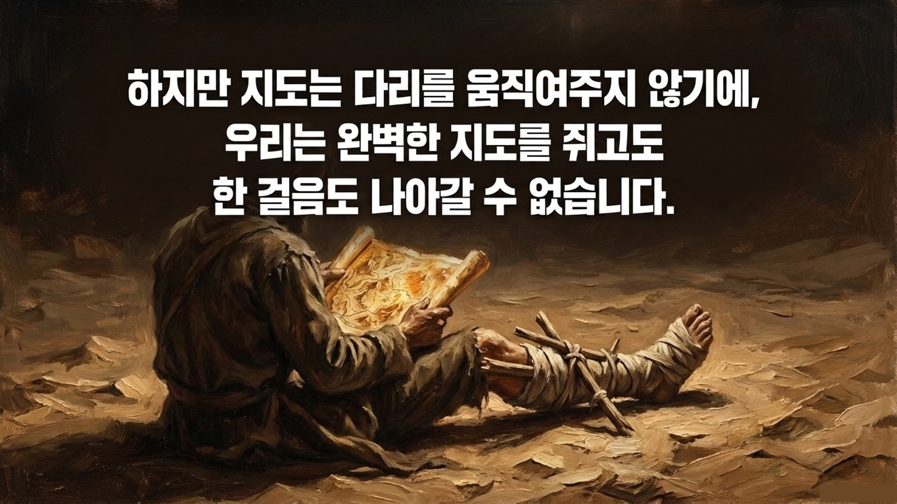
성경 말씀은 우리가 향해야 할 목적지와 길을 완벽히 보여주는 훌륭한 지도(KakaoMap)와 같습니다.
하지만 지도는 길을 가리킬 뿐 내 다리를 움직여 주지 못하듯, 이기적이고 지친 우리는 이웃을 진정 사랑할 힘이 결여되어 있습니다.
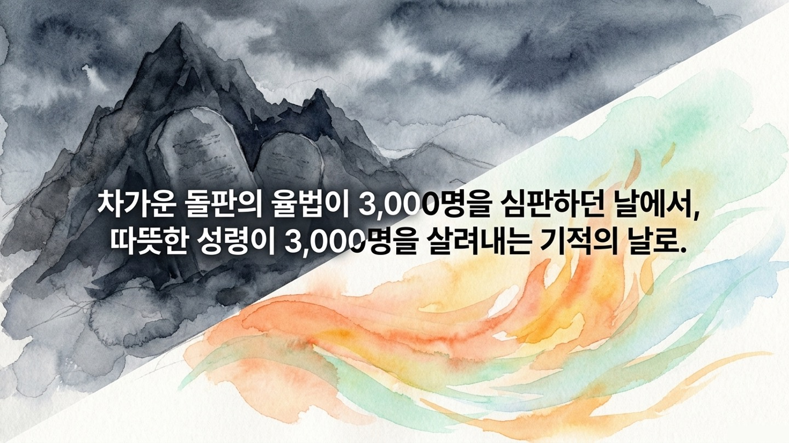
시내산에서 차가운 돌판(율법)이 온 날에는 죄가 탄로 나 이스라엘 백성 3,000명이 심판받아 죽고 말았습니다.
그러나 오순절 마가 다락방에 성령님이 불처럼 바람처럼 임하신 날에는, 복음을 듣고 3,000명이 회개하여 살아났습니다!
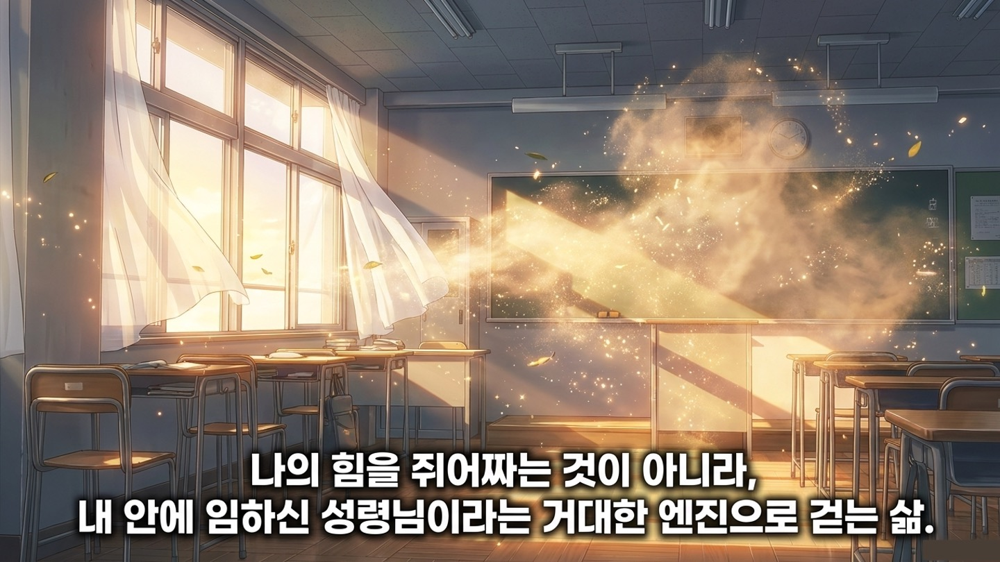
성령이 임하시면 내 성적, 내 시간, 내 간식만 아까워하며 욕심껏 움켜쥐고 있던 이기적인 주먹이 스르르 풀리기 시작합니다.
죽어도 용서할 수 없던 조별 과제 빌런, 나를 무시하던 얄미운 짝꿍을 향한 굳은 마음이 조금씩 말랑해지며 져줄 힘이 생깁니다.
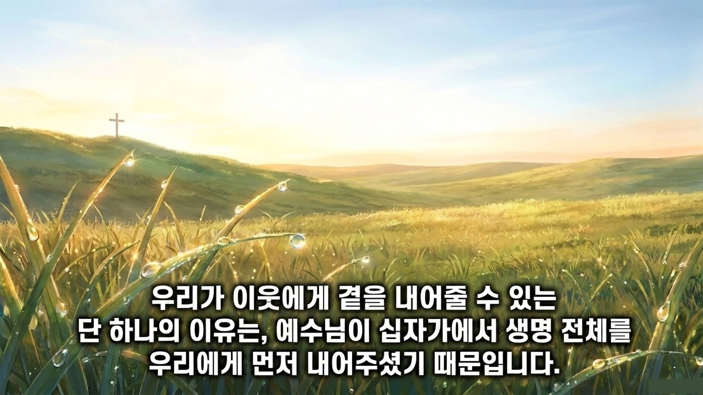
사실 우리부터가 하나님 앞에서 온갖 욕심 가득한 얌체 같은 영적 무임승차 빌런이었습니다.
예수님은 천국에만 가만히 계시지 않고 흙먼지 날리는 우리 현실로 직접 오셔서, 자신의 밭 모퉁이가 아니라 생명 전체를 십자가에서 떼어 비워주셨습니다.
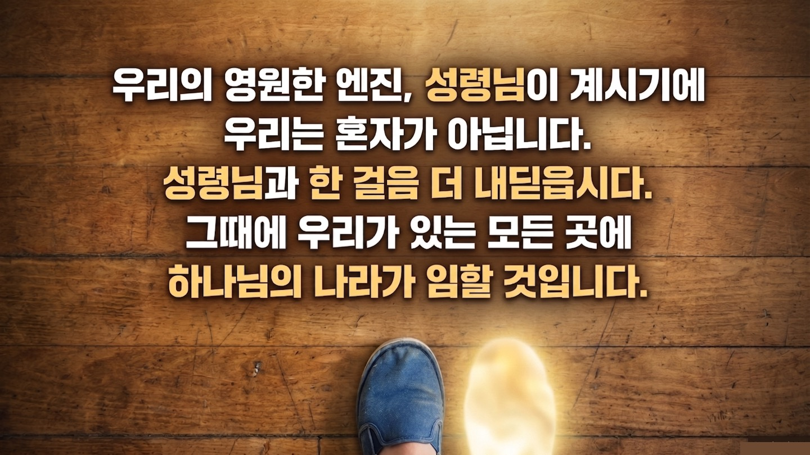
레위기라는 깊은 강을 건너 다다른 목적지는 깊은 은둔의 동굴이나 숲속 텐트가 아니었습니다.
내일 당장 가방을 메고 가야 할 시끄러운 교실이고, 거기엔 여전히 얄미운 짝꿍과 속을 긁어놓는 조별과제 빌런이 버티고 있습니다.
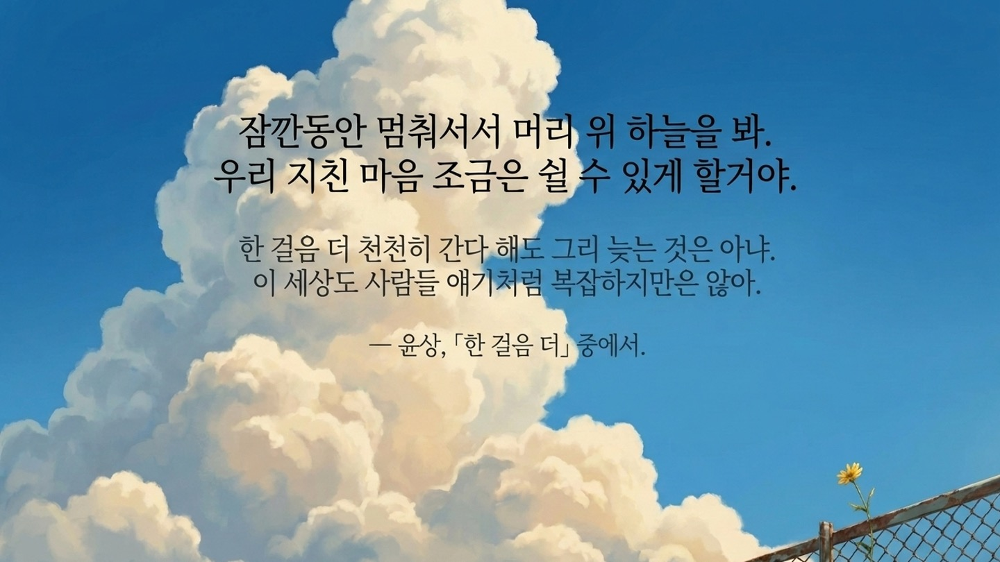
오늘 우리가 살아내야 할 거룩은 대단한 혁명이 아닙니다. 어제는 화를 참지 못했다면, 오늘은 딱 한 번만 속으로 참아보는 것.
어제는 짜증 나서 투명인간 취급했던 얄미운 그 조원에게, 오늘은 성령님 의지해 마음을 가라앉히고 한 번 먼저 따스한 인사를 건네보는 것입니다.
💬 이번 주 가족 식탁 질문
"내 교실과 일상 속에서 나를 가장 힘들게 하거나 피하고 싶은 얄미운 '이웃'은 누구인가요? 그 친구에게 한 걸음 더 다가가기 위해, 성령님께서 내게 어떤 부드러운 마음을 부어주셔야 할지 함께 속마음을 나눠봅시다."
🙏 부모님의 축복 기도
"하나님, 우리 아이가 욕심과 경쟁 속에서 자기 소유만을 꽉 움켜쥐는 삶을 살지 않게 하옵소서. 성령의 부드러운 엔진을 힘입어 이웃에게 밭 모퉁이를 남겨주고, 친구에게 먼저 곁을 내어주는 거룩하고 위대한 한 걸음을 기꺼이 내딛게 하옵소서. 예수님의 이름으로 기도합니다. 아멘."
부러진 다리를 성령으로 고치시고
매일 내 시끄러운 교실로 같이 걸어주시는 주님.
어제보다 오늘 딱 한 발짝만 더,
성령의 엔진으로 모험을 시작하세요!